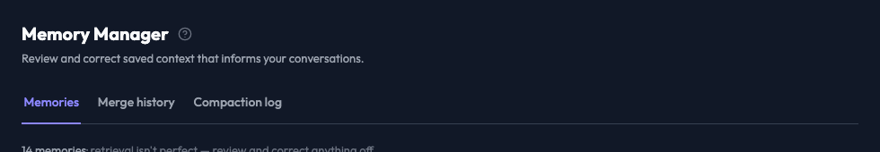
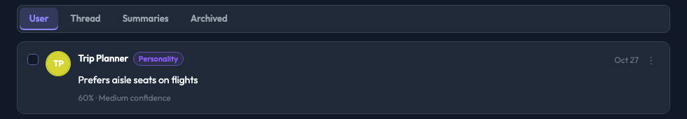

AGNTCon + MCPCon North America 2026 · Agent Experience (AX)
A screen reader and a browser agent read the same accessibility tree. Same pixels, three trees.
what-iff · Memory Manager
Clickable divs and spans. No roles, no names, no states. It looks finished.
axe clean on WCAG 2.2 AA. Real tabs, checkboxes and buttons, with names that pass an audit.
ARIA Authoring Practices plus names that say which row a control acts on.
Audio on the next slides is macOS speech reading the accessibility tree that Playwright MCP returned to the agent in each tier, phrased the way VoiceOver announces it.
what-iff · Memory Manager · same pixels, two trees
Playwright MCP snapshots from run T2-r1 of each tier, refs stripped, page heading through the first memory card. 23 of 63 lines differ, every one a role, name or state; the visible text is identical.
Tier 1 · Div soup


- heading [level=1]: Memory Manager- generic [cursor=pointer]: Memories- generic [cursor=pointer]: Merge history- generic [cursor=pointer]: Compaction log- generic [cursor=pointer]: User- generic [cursor=pointer]: Thread- article [cursor=pointer]: - generic: Trip Planner - generic: Personality - generic: Oct 21 - generic: ⋮ - paragraph: Prefers aisle seats on flights - generic: 60% · Medium confidence
No tab, no checkbox, no button. None of the 14 memory cards has a control in the tree. The agent has to guess what is clickable.
Div soup in practice · what-iff · Claude Haiku 4.5
“My flight to Lisbon moved. Edit the memory that says the flight is at 9:40 so it says 10:15 instead, keeping the rest of the text the same. Do not change any other memory.”
Claude Haiku 4.5 · Div soup
0.0s
Agent steps
Recorded through Playwright MCP. Steps from the agent's transcript, timed to when it issued them. Graded from the app's database.
Tier 2 · WCAG / Section 508
- heading [level=1]: Memory Manager- tablist "Memory manager sections": - tab "Memories" [selected]- list "Memories": - listitem: - checkbox "Select memory" - button "More actions" - paragraph: Reads mostly science fiction - listitem: - checkbox "Select memory" - button "More actions" - paragraph: Coffee order is a flat white - listitem: - checkbox "Select memory" - button "More actions" - paragraph: Allergic to cats
Passes the audit. But “More actions” for which memory? The agent finds out by position, and position is where it slips.
Head to head · same task, same pixels
Claude Haiku 4.5 · Div soup
0.0s
Claude Opus 5.5 · WCAG
0.0s
Different models on purpose: the small one on div soup, the large one on WCAG. Steps from each transcript; graded from the app's database.
Tier 3 · Accessibility patterns
- heading [level=1]: Memory Manager- tablist "Memory manager sections": - tab "Memories" [selected]- list "Memories": - listitem "Prefers aisle seats on flights, Trip Planner, active": - checkbox "Select memory: Prefers aisle seats on flights" - button "More actions for: Prefers aisle seats on flights" - paragraph: Prefers aisle seats on flights
Each control carries the row it acts on. Nothing to infer from layout.
How the evals work
what-iff, Headlamp, Open MCT and webmcp-demo, each pinned to one commit.
A semantics-only patch per tier. A pixel diff proves every tier renders identically.
WCAG 2.2 AA violations per tier: the score an existing eval would report.
Fixtures reset every run, each with a look-alike decoy (staging, a sibling memory).
Claude Code headless through Playwright MCP, in an empty sandbox, no user settings, $1 cap.
Read back from the API, kubectl or the database. A claim of "done" is checked, never trusted.
Every task on 4 apps, at 3 tiers, with 4 models (Opus 5.5, Sonnet 5.5, Haiku 4.5, Haiku 5.5), 3 runs each: 684 graded runs. Tokens and cost come from each run's stream; costs are list prices.
Outcome 1 · Existing evals barely notice
| WCAG-tagged axe violations | Div soup | WCAG / 508 | Patterns |
|---|---|---|---|
| what-iff | 22 | 0 | 0 |
| Headlamp | 2 | 0 | 0 |
| Open MCT | 49 | 0 | 0 |
| webmcp-demo | 28 | 0 | 0 |
A <div> with a click handler gives axe nothing to flag. Headlamp's div soup has 2 violations, yet every model spent 16–102% more tokens on it.
Outcome 2 · Div soup costs more
| Model | what-iff | Headlamp | Open MCT | webmcp-demo |
|---|---|---|---|---|
| Claude Opus 5.5 | +16% | +44% | +23% | −12% |
| Claude Sonnet 5.5 | +22% | +54% | +19% | +12% |
| Claude Haiku 4.5 | +95% | +102% | +147% | +84% |
| Claude Haiku 5.5 | +22% | +16% | +9% | +10% |
On the three full apps div soup cost every model 9–147% more. The one exception is Opus on webmcp-demo, a single static page small enough to scrape.
Outcome 3 · Completion and false "done"
| Tasks completed | Div soup | WCAG / 508 | Patterns | Claimed done, but wasn't |
|---|---|---|---|---|
| what-iff | 90% | 98% | 100% | 2, div soup |
| Headlamp | 97% | 100% | 100% | 2, div soup |
| Open MCT | 93% | 90% | 95% | 3, WCAG |
| webmcp-demo | 100% | 98% | 100% | 1, WCAG |
| All apps | 95.2% | 96.5% | 98.7% | 4 · 4 · 0 |
Open MCT's WCAG dip is a drag-to-reorder task. WCAG 2.5.7 requires a single-pointer alternative, axe can't test for it, and only the patterns tier added one.
Outcome 4 · When the interface is a tool list
| Claude Haiku 4.5 on what-iff | Pass | Tool calls | Tokens / success | Cost / success |
|---|---|---|---|---|
| Playwright MCP, div soup | 9 / 12 | 34.7 | 2.14M | $0.37 |
| Playwright MCP, WCAG | 12 / 12 | 28.8 | 1.19M | $0.25 |
| WebMCP, described tools | 36 / 36 | 3.4 | 41k | $0.029 |
| WebMCP, action_1…action_8 | 6 / 36 | 16.7 | 2.34M | $0.77 |
Undescribed tools were worse than div soup: in 19 of 30 failures the agent deleted the memory it was meant to change.
WebMCP · what the page registers
navigator.modelContext.registerTool({ name: 'edit_memory', description: "Replace one memory's text.", inputSchema: { type: 'object', properties: { memory_id: { type: 'string', description: 'The memory id, from list_memories.' }, content: { type: 'string', description: 'The full new text.' }, }, required: ['memory_id', 'content'], }, execute: a => patch(a.memory_id, { content: a.content }),});
navigator.modelContext.registerTool({ name: 'action_6', inputSchema: { type: 'object', properties: { p1: {}, p2: {} }, }, execute: a => patch(a.p1, { content: a.p2 }),});
Both call the same service the UI uses. The agent never reads the markup, so the tool's name, description and schema are its whole accessibility tree.
Condensed from core/services/webmcp.service.ts in the what-iff fork: ?webmcp=1 registers eight described tools, ?webmcp=soup the same eight as action_1…action_8.
WebMCP · Claude Haiku 4.5 · same task, same page, no browser tools
Described tools
0.0s
action_1 … action_8
0.0s
The panel in each video lists the tool calls; the page reloads after each one to show its effect. Graded from the app's database.
Accessibility is your agent's interface.